| Need An Ad Free Flashlight? Amazingly There's An App For That!: (Feb 12, 2016) | |
|---|---|
The common smart phone has become an essential tool to anyone wishing to simplify their world. From navigating congested streets in an unfamiliar city, to using our phone as a level, or simply finding our way through the dark, our smart phones have become a seemingly essential tool in our daily lives, but all too often these tools come at a cost. ...(Read More) | |
| Hate Sending Snail Mail? There's A Website For That! (Feb 04, 2016) | |
When someone mentions that they are receiving a ton of mail, our minds instantly jump to the conclusion that they are discussing their email. We subscribe to many services that offer promotions, discounts, and benefits to their patrons in an attempt to lure their attention to the online services they offer. The push for online commerce has been so large, that we commonly see the slogans of "Go Green, and stop receiving paper bills" along with these services even going as far as to provide convenient ways of sending a payment. ...(Read More) | 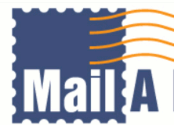 |
| Search Engines, How They Love Your Data. (Feb 03, 2016) | |
When browsing the internet today, it's rather unfathomable to imagine what the world would be like without search engines. These useful services help us find all sorts of material that is spread all throughout the web. With so many services offering to display a variety of results, we can easily fine tune our search experience to display almost anything that we can expect, ranging from websites, images, to even videos. But while these services have become an essential part to navigating the vast unknowns of the web, we typically forget that these same search engines are busily recording every search term we give it, so that the information can be sold in 'smart marketing' schemes. ...(Read More) | 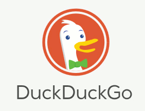 |
| Using A Computer, Without Leaving A Trace. (Jan 31, 2016) | |
While many users do not ever realize it, we all leave behind traces of our usage activity. From the point of turning our computer on, to when we turn them off, we leave a massive forensic trail that anyone with a bit of computer know-how can follow. Every day, we happily use our machines as rightfully our own. We go about our daily digital activities of visiting sites, installing applications, and even downloading media, all without concern of what kind of digital traces of our activity that we are leaving behind. But what can we do to help cover our trails. ...(Read More) | 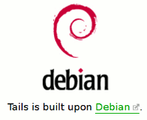 |
| The Crumbling Cookie, What Information Are We Leaking Online? (Jan 28, 2016) | |
When we browse the web, we commonly forget that the internet is essentially an information vacuum, collecting any bit of data that's given to it without discrimination. But while jumping from website to website, we web surfers rarely pause for a moment to consider what kind of information we are leaking out to the world. ...(Read More) | 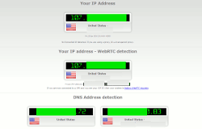 |
| VPN Vs Proxy, Which One Should We Use? (Jan 27, 2016) | |
When we browse the web, we commonly forget that the internet is essentially an information vacuum, collecting any bit of data that's given to it without discrimination. But while jumping from website to website, we web surfers rarely pause for a moment to consider what kind of information we are leaking out to the world. ...(Read More) | |
| Online Security, If We Have Nothing To Hide, Why Should We Care. (Jan 26, 2016) | |
Often, when I discuss the importance of online security with my friends, I have a constant need to always remind myself that many of them carry a false assumption that online security only applies to their personal information, like their name, number, address, and other sensitive information leaking online. While this indeed is one of the many potential risks when our security has been compromised, the true type of attacks typically end in a compromised machine, to even attempts to convince you to willingly hand out your hard earned cash for some supposed beneficial service. ...(Read More) | 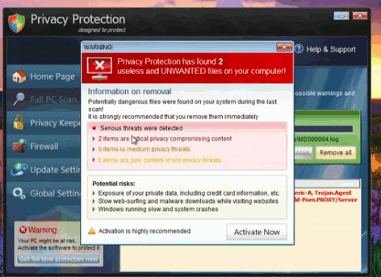 |
| Convert Virtual Currency On The Fly (Jan 25, 2016) | |
The majority of us who use it absolutely love the stuff. A virtual currency that not only bypasses a central banking system, but one that has also been designed with relatively fast transactions processing times, operating without human oversight, authorization, or extravagant middle-man fees. For these reasons, it's only expected to see the adoption of virtual currencies to grow at an exponential rate. While virtual currencies were at one time more of a collector's item, or to be used with some shady underground market, virtual currencies have begun to lead the way to being the next globally used currency. ...(Read More) | |
| Updating Multiple Tools With One Installer. (Jan 23, 2016) | |
We all use them, Flash, Java, 7-zip, VLC, and numerous others. These small but useful applications have become a global sensation due to the variety of utility that they provide to us. With anywhere from video players to system management software, these free applications can be found in almost every Windows computer around us. ...(Read More) | 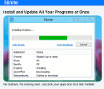 |
| The Price Of Free. Getting Things One Typically Wouldn't Pay For. (Jan 22, 2016) | |
When it comes down to getting things for free, the majority of consumers are already prepared for some kind of catch. Ranging from annoying advertisements, to trial periods, to even selling our personal emails, the majority of us know that the 'FREE' slogan is but an illusion. We commonly put up with these hassle in return for a free service, and for most of the time, everyone leaves happy, but what if a service was taking advantage of you without your knowledge. What would one think if a company wanted far more than a simple shown advertisement, and how would one feel if a company wanted to harvest the resources of their users for their own financial gain. Would the visitor still be so eager to join the crowd? ...(Read More) | |
| Don't Get Locked Out In The Rain, Secure Your Keys! (Jan 21, 2016) | |
|---|---|
We all have the potential to be faced with this dilemma. Some of us get lucky and notice the error of our ways before it's too late, while others are not so fortunate. Most web gurus that I've met make attempts to take care of their technological belongings. They are typically quite successful and are able to make their devices last for nearly half a decade, if not longer. But what happens when something goes wrong and you're not prepared for the unexpected. ...(Read More) | |
| Free Disposable Email Forwarding, With An Awesome Name. (Jan 18, 2016) | |
They are typically found in every inbox and they seem almost impossible to avoid. These little emails that tend to fill our Junk folders and even sometimes, our Inboxes. While email providers struggle to offer integrated spam filters that can help keep your inbox neat and tidy, they can only prevent so much. Thankfully, there are other ways to help give yourself, and your email provider, a huge break. ...(Read More) | |
| Financial Gain From A Comment. Too Good To Be True? (Jan 18, 2016) | |
I would like to believe that we would all enjoy a life of luxury with minimal effort. Career opportunities that allow one the freedom to work from home is by no means an opportunity that one would be willing to let pass. But when you see some strange person coming out of the blue, promising you easy financial gain by simply posting some link or website. Do you really ever wonder if the whole system works, or is the entire system some sort of Ponzi scheme, and are those even real people making those comments? ...(Read More) | |
| A Torrent Client That Runs With The Power of TOR Technology. (Jan 17, 2016) | |
When it comes to torrent clients, there is an exceptionally large array to choose from. Ranging in complexity and functionality, there are enough flavors of these clients to suit almost anyone's needs. But what if you want something special, what if you want something that's designed to keep you safe while traversing the p2p network. ...(Read More) | |
| Unlimited Legal Music, From Multiple Sources. (Jan 17, 2016) | |
The rise of streaming music is at an all-time high. Browsing Youtube, Soundcloud, or even Spotify, one is able to find nearly anything they could be looking for, typically at the price of free. But wouldn't it be nice to have this whole catalog of music in one virtual place? ...(Read More) | |
| Free Torrenting in the Cloud. (Jan 16, 2016) | |
On my quest to find engaging upcoming services that would help protect your identity while online. I always seem to stumble on the most fascinating of wonders. Today I would like to share with you a site named zBigz ...(Read More) | |
| Four Years of Trusted Service. (Jan 15, 2016) | |
When I find a service that proves themselves multiple times over, I can't help but to fall in love with them and become a loyal patron. I have tried numerous different services over the years, and I've had my fair share of both good and bad experiences along the way. But there has been a service that has never placed me in any predicaments. ...(Read More) | |
The common smart phone has become an essential tool to anyone wishing to simplify their world. From navigating congested streets in an unfamiliar city, to using our phone as a level, or simply finding our way through the dark, our smart phones have become a seemingly essential tool in our daily lives, but all too often these tools come at a cost.
When doing a simple search on the Google Play store for 'flashlight', the visitor can easily become overwhelmed with the numerous results available. With a wide variety of colorful names, it seems almost impossible to find a tool that doesn't want to market to their users. And sadly, the first recommendation by Google is most often the worst.
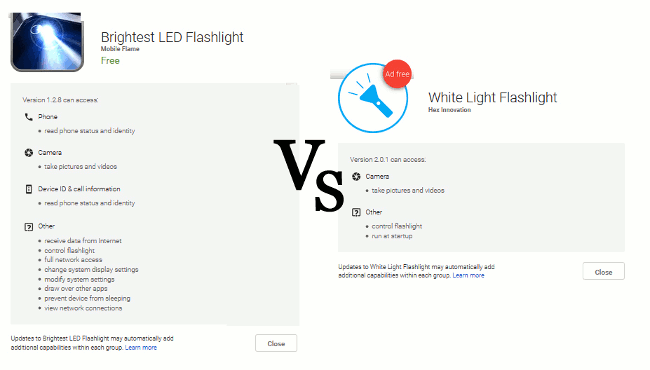
After a few moments of sitting down and shifting through numerous apps and reviewing their requested permissions, I stumbled on an app that promises to deliver with minimal permission requirements. Going by the name White Light Flashlight, the only hint that the application doesn't contain advertisements is in the image. Upon testing the application, it worked perfectly and features a very smooth interface that doesn't show advertisements or doesn't display a nag when pressing the back button. One feature I enjoyed about White Light Flashlight is the slider bar that allows user to quickly adjust their screen brightness. This prevents me from blinding myself while using the flashlight in a dark room. I will have to admit that I was a bit skeptical of the simplicity and decided to test it out for a few more days to make sure there weren't any time delayed surprises, and after proving its worth, I instantly fell in love with this tool, and it has replaced all flashlight apps in my family household.
With so many free tools available for our smart phones. It's only a wonder what the engineers will imagine adding next. But while these tools are often marketed at the cost of free, users have to be diligent that they aren't selling their data to the vastness of cyber marketing for a simple tool to help guide them through the dark.
When someone mentions that they are receiving a ton of mail, our minds instantly jump to the conclusion that they are discussing their email. We subscribe to many services that offer promotions, discounts, and benefits to their patrons in an attempt to lure their attention to the online services they offer. The push for online commerce has been so large, that we commonly see the slogans of "Go Green, and stop receiving paper bills" along with these services even going as far as to provide convenient ways of sending a payment.
With the amount of digital communication that the internet facilitates today, postal mail carriers have been assigned to the medial task of delivering parcels, and the ever growing piles of junk mail that seems to populate our physical mailboxes more often than our digital ones. But what if you needed to mail a letter, or even mail someone a receipt. What if you would like to mail a letter to your state representatives? Would one be so eager to make the extra trip just to buy a stamped envelope? With the ability to continue our daily life with the absence of physical mail, our intolerance for this snail service has only increased, but there is a small business that is making attempts to close this gap between the two worlds. With a service named Mail-A-Letter, we who live strictly in the digital age now have an easy way to send out letters via postal snail mail, all without leaving our digital worlds.
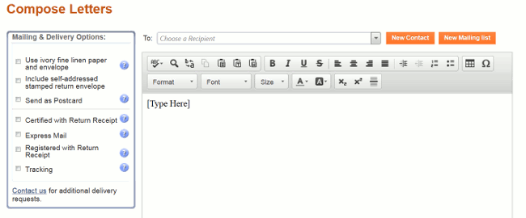
When using Mail-A-Letter's service, I was instantly attracted to the interface. Simulating a familiar environment of an email client, the interface feels very friendly. The user is able to copy & paste their message, maintain a clean address book of all our physical contacts, keep a history of letters sent, as well as other perk items like delivery confirmation or even tracking services. While the service isn't free, I have used them to mail eBay seller receipts and letters to my state representatives and I feel the need to point out that their prices per letter are quite competitive considering that I didn't have to pay for any envelopes, stamps, paper, or ink, and was even able to avoid the one-track trip that it would have taken me in order to gather all of the needed supplies.
With 2020 not so far away, it's only understandable that we have come to adore our email and other numerous forms of digital communication. But sometimes digital mail just doesn't quite get our message across for one reason or another and physical mail seems to always be our fallback plan. And now with services like Mail-A-Letter, it has become seemingly seamless to sending physical snail mail, in our digital age.
When browsing the internet today, it's rather unfathomable to imagine what the world would be like without search engines. These useful services help us find all sorts of material that is spread all throughout the web. With so many services offering to display a variety of results, we can easily fine tune our search experience to display almost anything that we can expect, ranging from websites, images, to even videos. But while these services have become an essential part to navigating the vast unknowns of the web, we typically forget that these same search engines are busily recording every search term we give it, so that the information can be sold in 'smart marketing' schemes.
Do Americans buy more cars during tax return? Do California residents search for jewelry more often on Valentine's Day than Florida residents? Many corporations are paying rather large sums of money to search providers to have these questions answered on a daily basis. But how would we feel if our search terms get recorded when they have nothing to do about buying anything at all, as we search for things that are a bit more controversial. Many users are intrigued by curiosity, even to material that is deemed forbidden to be viewed. Even Wikipedia gives a rough description on how an atom bomb operates, information that was highly controversial to seek out at one particular time.
While a simple search for "Hoe does an Atom Bomb work?" may appear as a trivial search term, many search providers do not care about the reason for searching said term. Instead it happily records the activity and shows statistics of how many people searched for it, and where. A sudden spike in searches for atom bomb schematics in one nation could appear as a uprising terrorist group, to the enforcement agent who has an untrained eyes but who is using big-data statistics provided by search engines. For this reason services like DuckDuckGo are slowly creating competition for many larger corporations. By promising to not retain any tracking information on their users, these search engines offer a fast and secure way to search for information, without having our search terms, IP, or browser fingerprint recorded until the end of time.
Browsing the internet safely can become quite a chore to the untrained web surfer with the numerous services standing eagerly to sell our information to the highest bidder, With so many services seemingly working against us, it's rather nice to see services that have a real focus on online security, even if that mean missing their opportunity to turn their visitors into cash cows.
While many users do not ever realize it, we all leave behind traces of our usage activity. From the point of turning our computer on, to when we turn them off, we leave a massive forensic trail that anyone with a bit of computer know-how can follow. Every day, we happily use our machines as rightfully our own. We go about our daily digital activities of visiting sites, installing applications, and even downloading media, all without concern of what kind of digital traces of our activity that we are leaving behind. But what can we do to help cover our trails.
While trying out different applications, the buildup of usage data can be easily disguised and hidden from daily view. While uninstalling the application would appear to have visually removed the software, a quick look in the registry, Application Data folder or even the Program Files folder, will typically reveal empty values, named folders, or even left over files that are easily identifiable, and contain signature marks of these uninstalled applications.
Of course the user can go through and manually delete all of the empty folders and values, but there would still be a need to wipe the sensitive information from the hard drive, as an emptying of the Recycling Bin leaves deleted data that can be easily recovered by any free or professional data recovery suits. But thanks to a free operating system named Tails, one is able to create a bootable USB and essentially use any computer (even one without an existing operating system) to access the internet and preform the numerous online chores that we do today, all without leaving traces that have the ability to illuminate our previous usage activity.
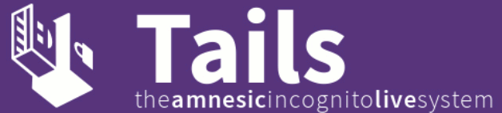
One of the things I enjoyed most while using Tails, is that the package has TOR technology implemented right into it. The Tails distribution is also packed full of other common tools one would come to expect like a web browser, FTP client, and much more.
Being armed with a disposable operating system covering our local tracks, and with the usage of TOR covering our online tracks, the usage footprint of a system running Tails allows the use of a computer with almost complete anonymity. And with disposable operating systems like Tails being freely available to use, and without leaving traces of our online activity, it's a neat tool to have. The kind of tool that can be easily carried on any key chain, disguised as some innocent looking cookie monster figurine.
When we browse the web, we commonly forget that the internet is essentially an information vacuum, collecting any bit of data that's given to it without discrimination. But while jumping from website to website, we web surfers rarely pause for a moment to consider what kind of information we are leaking out to the world.
While many web-surfers have adopted the use of proxies and vpns to prevent such information from leaking, these methods are not always fool proof, and all too often the daily applications that we use to enrich our lives, like our web browser, are one of the many potential culprits that can leak our real information. With browser add-ons ranging from flash to java, we expect these 'features' to only enhance our browsing experience, but sadly, these features can be riddled with bugs, or even implemented with a poor design, one that can be utilized for malicious uses.
By now, one might be quite concerned about their online 'crumb trail' and wondering how we would go about finding out exactly what information we are handing over to the sites we visit. While multiple websites exist to help us do just that, it is difficult to find one site that will give us a wide range of testing. While searching for a site to test a broad range of vulnerabilities, I have discovered that one of the most advanced sites to be found is a website known as IPLeak.net. With tests consisting of DNS, webRTC, and other IP leaks, it is one of the most comprehensive testing websites available today that offer their services at no cost to you.
As of late, even I have fallen victim to one of these vulnerabilities on my new pc that I recently built. I decided to test out the machine at IPLeak.net and discovered that my system was leaking webRTC information! After an easy disabling of the feature, I was safe once again, but it only goes to underline the importance of these kinds of websites, as I likely would have completely forgotten that webRTC is a feature that is enabled by default.
With so many issues to look out for, It is quite easy to become overwhelmed with all of the safety precautions to remember, with so many programs, features, and even websites working against us. We have to be quite diligent to ensure we are not part of the crowd that's happily giving away their information to the vacuum of the internet that it is today, as such leaks only go to benefit many corporations and their user tracking ideologies.
While taking my daily stroll of online chat forums, there has always been one question that seems to be echoed numerously. Far too often I see the unanswered question of, "What is a socks5 proxy, and how is it different from a VPN?" These questions typically carry a colorful variety of answers, but commonly don't have any relevance to the original topic. With short answered comments which usually carry a reply of 'more speed', or 'it's easy to use', these answers leave the reader full of unanswered questions. While the specific differences can become quite technical, this article will discuss the main factors one must consider when choosing to use a vpn, a proxy, or maybe even both.
How is a Proxy different from a VPN?
There are two main differences between proxies and VPNs. While both provide a representative server to act on the computer's behalf, a proxy is application specific, while a VPN works system wide. When using a proxy, one will need to enter some server port and IP address, username, and their password into the desired applications to get it to establish a connection with the proxy server. It is also very likely that they will need to configure a few settings in the application in order to prevent information from leaking past the proxy out into the public world, in the case that the proxy connection fails or disconnects. A VPN on the other hand, will tunnel all internet traffic across the whole system. This allows the user to use any and all of their software with the VPN connection, even if an application doesn't offer a proxy connection inside the application's settings.
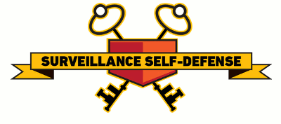
The second main difference is that proxy traffic is not encrypted by default, unlike a vpn connection. This means that while using a proxy, the users Internet Service Provider will still be able to monitor their traffic activity unless they take measures to encrypt it by using SSL, or some other top layer encryption. While using a vpn, any traffic that is sent to the outside world is encrypted, preventing the ISP from monitoring the connection. If they attempted to see what the user is doing, they would simply see one tunneled connection with encrypted traffic, resembling junk information.
Which one is faster, and why?
If you haven't already made the comparison by now, downloading behind a proxy is much faster than being connected solely to a vpn. This is due to the extra processing work needed by both the user's computer and the server to encrypt their system wide traffic and tunnel the communication to the server, and then decrypt and process it out the server. This extra processing cost has a significant effect on downloading speeds, but a huge boost to cyber security. Proxies on the other hand do not use any default encryptions, and since the traffic is limited to a specific application, there is a significantly smaller load to tunnel, and process, leaving room for an increase in speed.
Which one is easier to use?
As mentioned previously, with a proxy, there will be some settings to configure in order to get a reliable connection. There will also be a high chance that the user will need to search for any additional settings to ensure their real information will not get leaked, if the proxy connection happens to fail. With a vpn, one can expect to install some client software provided by their vpn provider, select a country, enter their log-in information, click connect, and the user is then golden to use almost any application, with a feeling of confidence, all with relative ease.
Can a VPN and a Proxy be used together?
While discussing the topic of VPNs and proxies, this is a great question to ask. The truth is that a user can definitely use both together. When using a proxy with a VPN, the user will likely notice a speed boost. This is a result of allowing their torrent client or other application to utilize the proxy while other system wide traffic is pushed to the vpn. This method allows the user to create a security net, in case the proxy fails. Instead of leaking real information, the vpn will kick in and catch the connection, enabling the user to enjoy the speed of the proxy, combined with the added ability to enjoy the security of the vpn as well, it's the best of both world.
So which one should I choose?
Armed with a basic idea of what each one provides, one should have a good understanding of which service would be most suitable for them. If someone simply wants to protect themselves from the outside world, with a fast connection for a cheap price, they should go with a proxy. Being able to selectively choose what application should use a proxy is a rather nice feature, being a web browser, torrent client, or any other application that offers proxy configuration.
But if one is really serious about their online security, and willing to take any measure to prevent it from leaking online, or they don't want to be bothered with any configuration settings, and would rather have a system wide encrypted tunnel to the outside world, with an option to turn the service on or off with a simple button click, then a VPN is the way to go. But for those who are most comfortable with VPNs and proxy usage will find that using both together, can provide the benefits of both worlds.
Refrence: EFF.org (How to Circumvent Censorship)
Often, when I discuss the importance of online security with my friends, I have a constant need to always remind myself that many of them carry a false assumption that online security only applies to their personal information, like their name, number, address, and other sensitive information leaking online. While this indeed is one of the many potential risks when our security has been compromised, the true type of attacks typically end in a compromised machine, to even attempts to convince you to willingly hand out your hard earned cash for some supposed beneficial service.
All too often I hear the mediocre argument of "If you don't have anything to hide, why should you care?" This all too common misconception about the malicious intentions of cyber criminals only help to foster their agenda, as many cyber criminals rely on trickery and ignorance in order to compromise your online security. With bogus emails, spoofed popular websites, or even hyperlink hijacking, the notion of, "I don't have anything to hide, so I don't care." only propagates the spread of malware and other cyber-attacks. Being some advert site offering some bit of sponsored news, to that underground website that gives away media for free. We typically see some pop-up, or other aggressive advertisement offering some tool, or even more commonly, displaying some fake warning, that some online scanner has detected some serious infection on your machine, and you must act now.
It is quite common for cyber criminals to spread their attacks by placing malicious code within seemingly helpful applications. Unsuspecting of the user, these applications only lead to other problems when they are allowed to run wild on one's system. Allowing that generic looking anti-virus to perform a full system scan on some machine will very likely result in a few multiple virus detections, demanding the user to install some application to remove the supposed threats. And once the application that's offered has been installed, the user is typically welcome with some sort of "removing infections' prompt, all the while the application is preparing the users computer as the next potential gateway for an attacker. With the ability to control a computer without the user's knowledge, not only can these attackers use a computer to launch other attacks, spread malicious code, or even spy on people, but a compromised computer that has been infected with these malicious applications can even prevent victims from accessing their personal files until they send some sort of payment. This type of malicious activity is known as ransom-ware and it is a popular tactic used to pressure cash away from family members, creative artists, and even business professionals working on a time-sensitive presentation.
But what simply amazes me when it comes to online security, is that the technology we use every day works a bit too well. Many cyber criminals all too easily make mistakes and unintentionally leak their own information online, providing the authorities with evidence for their arrests. And if these cyber criminals, who are masters of disguise and secrecy, can fall victim to the information vacuum that we call the internet, it is only unimaginable to consider what type of information that is already publicly available on 'us' regular web surfers, no hacking needed.
(YouTube video explaining more.)
The majority of us who use it absolutely love the stuff. A virtual currency that not only bypasses a central banking system, but one that has also been designed with relatively fast transactions processing times, operating without human oversight, authorization, or extravagant middle-man fees. For these reasons, it's only expected to see the adoption of virtual currencies to grow at an exponential rate. While virtual currencies were at one time more of a collector's item, or to be used with some shady underground market, virtual currencies have begun to lead the way to being the next globally used currency.
With the increasing ability to purchase numerous digital services, and the onset of a few retail outlets beginning to accept the currency, the mass adoption of this currency has given rise to other virtual currencies like Litecoin, Namecoin, Dogecoin, and numerous others, each offering their own perks ranging from complete anonymity to total ease of use, with Bitcoin leading the way and claiming the most popularity.
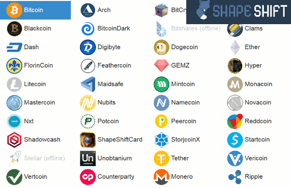
But while Bitcoin has become relatively easy to obtain, one must wonder and ask themselves, "How would one go about purchasing Litecoin or even Namecoin?" While some Bitcoin financial institutions may offer sale of these other currencies, it is rare, and the users are typically left in the dark, leaving them to do their own research or guess work.
For those who wish to venture the new frontiers that are utilizing these other forms of currency, today will be your lucky day, as you will be able to pick up your adventure from where you have left off. With a currency conversion website known as ShapeShift, one is able to quickly and easily convert their virtual currency into almost any form imaginable with relative ease. On visiting the site, simply select a deposit type on the left and your conversion type on the right, specify a compatible wallet on where you would like to receive your newly converted funds (you can't use a Bitcoin wallet for Litecoin), and then simply send the funds to your conversion deposit address, and after a few minutes, your newly converted funds will arrive in your receive address.
Besides having the ability to simplify the whole process, what I enjoyed most about ShapeShift is the service is completely free to use, all without any nagging registration requests. They also provide a mobile application for both the Apple and Android platforms, which has the ability to simplify the process even more. And for the extreme techs, ShapeShift also offers an API that can be used with your creations
With these services like ShapeShift allowing visitors to convert and make use of a wide range of virtual currencies so convenient, it won't be long before the next trend of virtual currency takes a foot-hold, and while Litecoin is gaining traction, there is still plenty of room for others. And with a service like ShapeShift providing users a friendly and simple way to gain access to these new virtual currencies, one can only imagine what feats of financial innovation may come next.
We all use them, Flash, Java, 7-zip, VLC, and numerous others. These small but useful applications have become a global sensation due to the variety of utility that they provide to us. With anywhere from video players to system management software, these free applications can be found in almost every Windows computer around us.
With this trove of tools being so plentiful, it's easy to forget about them. Although used regularly without problems, these small applications seem almost as if they were an essential part of daily operations, and all too often, we forget all about their maintenance until they have lost their functionality, or are unable to do something that we have come to expect on a regular basis, like playing the latest video codec.
Having so many tools for one to keep up with, it can become quite cumbersome for one to visit the official website for the latest update of each tool. Many resist every opportunity of enabling the auto-update feature, if one is offered, as it is only understandable that nobody would want an extra process to be running in the background of their machine, just for a simple update. And for these reasons, we typically acquire a habit of leaving these applications out dated, as we omit them from the routine maintenance of our systems.
But the next time you decide to install an update, wouldn't it be great if you could update all of those tools in a one-shot installer. Imagine a simple setup that would not make any attempts to sneak past a few checked offers of spam, nags, or any other regretful surprises. The kind of surprises that typically lurk in official installers, as I have even noticed as of late, that Java has begun making attempts to push Yahoo in their installers. With the ever growing number of tools that we use, it seems someone has decided to avoid this tedious chore by created a site that's dedicated to simplifying this whole process and also, our lives.
With a small yet powerful site called Ninite, the visitor is able to place a check next to each application that they use, and then simply click a button to grab an installer package that will install the latest version of those applications. This allows the user to not only avoid time consuming uninstalls, or check auto-updates, but also allows the avoidance of adware recommendations or other surprises commonly found in the official installers.
For the more serious system administrators, Ninite also offers a pro version that allows admins to remote update their tools on all of their systems, saving our valuable time in the process. And with the ease and convenience that Ninite offers, anyone who cares about their system will be able to save loads of time, leaving room for the more enjoyable things in life.
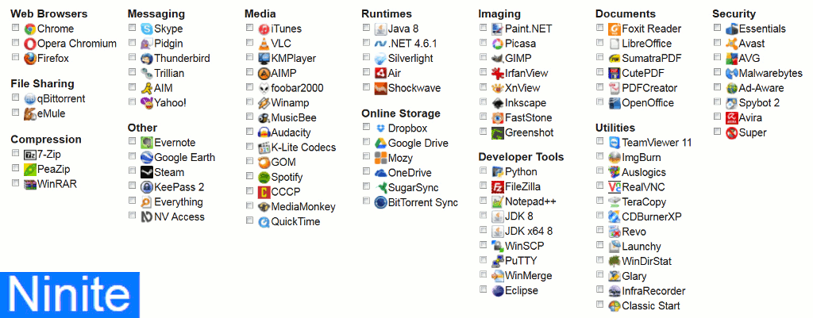
When it comes down to getting things for free, the majority of consumers are already prepared for some kind of catch. Ranging from annoying advertisements, to trial periods, to even selling our personal emails, the majority of us know that the 'FREE' slogan is but an illusion. We commonly put up with these hassle in return for a free service, and for most of the time, everyone leaves happy, but what if a service was taking advantage of you without your knowledge. What would one think if a company wanted far more than a simple shown advertisement, and how would one feel if a company wanted to harvest the resources of their users for their own financial gain. Would the visitor still be so eager to join the crowd?
We all hear in the digital news about some site getting attacked. Stories of some website being hit with huge amounts of traffic from multiple sources, causing not only a distributed denial of service (DDoS) attack, but also running a chance of the affected website or servers to become vulnerable and susceptible to other types of hacks and attacks.
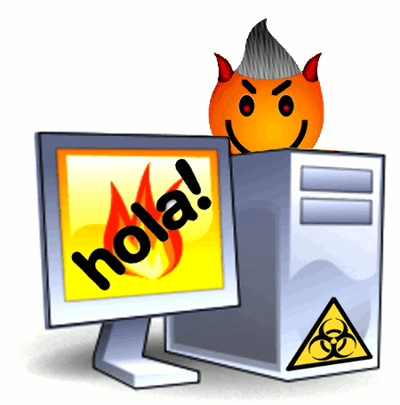
One could only wonder how these types of attacks are created, how can attacks from thousands, if not millions of places come forth and attack a single target. The answer lies within the hidden code of these questionable free services that have aims to control a portion of your computer. These questionable applications that foster this type of botnet activity can be found in all sorts of places. Anywhere from free Facebook games that have the ability to self-share themselves to all of your Facebook friends to free mobile games that requests permission to all of your email contacts, or even free PC applications that are disguised as helpful tools but realistically have more malicious intentions.
One service that does all of that discussed above is the free vpn provider named Hola. A vpn that's hosted by an Israel company, the company offers free vpn services as a browser plug-in, but at the cost of a very sharp price. Upon using the Hola service, the user has ultimately agreed to share their PC's resources with the Hola network, and once part of their network, anonymous or questionable agencies can rent portion of the harvested resource network through the Hola Illuminati service. Marketed as a data gathering tool, the Hola Illuminati services allows the purchaser to selectively choose any site to attack, specify an exit node for their traffic, and if the owner is doing any illegal activity and that exit node just happens to be your IP, well then that's just tough luck for you. And sadly, in many cases, the Hola support staff is completely unaware on what the rented botnet is being used for.
Another risk in using the Hola service is that one could be actively supporting the DDoS attacks of sites without ever realizing it, all because they trusted some company to offer them a free service. But what if they didn't care about what happens to other sites, what if the attacks wasn’t solely targeted at other websites and instead also caused them damage.
As with any surge of activity, this excess strain can cause unneeded wear and tear on your PC. With Hola forcing your pc to do calculations and even route traffic for them, they are essentially using your equipment for their own financial gain, leaving you with the increased electric bill, degrading hardware, and ultimately the repair bill. While some would argue that the degradation is trivial as it is not instantly apparent. It is a known fact that running your PC with an extra consistent strain will only generate more heat, consume more electricity, and commonly results in a shortened life-span of your hardware due to the constant strain of thermal damage.
So is free always a good thing? Sometimes it can be, but one really needs to be aware on what they are signing up for. Otherwise they might receive a surprise when their PC begins to act like it’s running a game when you are letting it sit and idle. And letting some company inflict wear and tear to your PC isn’t typically an activity that someone would happily pay for, but all too often received at the price of free.
We all have the potential to be faced with this dilemma. Some of us get lucky and notice the error of our ways before it's too late, while others are not so fortunate. Most web gurus that I've met make attempts to take care of their technological belongings. They are typically quite successful and are able to make their devices last for nearly half a decade, if not longer. But what happens when something goes wrong and you're not prepared for the unexpected.
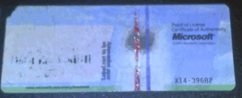
Typical with laptops and common with towers, far too often something happens to our Windows OS and we are suddenly facing the need to reinstall one program, or another, or sometimes dreadfully, the whole operating system. But what does one do when they are prompted to enter their Windows license key before being allowed to continue their installation, only to find that their Windows Code of Authenticity sticker has been worn beyond recognition?
Does one run out to their local market to buy a fresh OS? Or worse yet, does one shrugs the situation off as they say, "Time for an upgrade!” I've had a similar experience happen to me with one of my most favorite PC games. While I had my installation CDs I discovered that the page with the CD key was missing, and while I still had the game installed and playable, I knew it was only a matter of time before I would be in some serious trouble if I was ever faced with a reinstall.
Thankful there are free tools out there that can help you avoid these situations before it’s too late. With a neat tool named Belarc Advisor, one is able to recover virtually all of their activation keys for their installed products. Detecting anything from Microsoft, Adobe products, legacy support, and even support for many games titles, one is able to easily prevent what would otherwise be a huge headache.
After Installing Belarc Advisor, a webpage will open with a summary of all of the categories about your PC, displaying everything from basic specifications, to missing security patches. If one scrolls down to the section labeled 'Software Licenses', you will be able to see and recover your missing or worn keys! Remember that worn Windows sticker? Now would be a great time to write your license code on that sticker with a pen, and you can even place a piece of clear scotch or packaging tape over it to prevent the ink from smearing or rubbing away again.
One eye-catching perk about this tool is that it is offered completely free, while other applications make attempts to charge users for basic software license restoration, this software allows that plus much, much more. I also really enjoyed the update support and the vast array of categories that allows me to review a complete audit of my system.
It's never fun being stuck facing a reinstall without access to your installation keys. It's a problem any sane person would want to avoid at all costs. Thankfully, when one has a tool like Belarc Advisor in their arsenal, they will never be stuck out in the rain, without their keys.
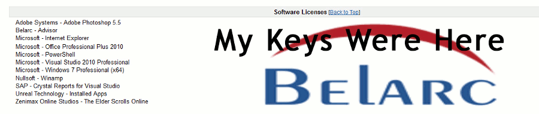
They are typically found in every inbox and they seem almost impossible to avoid. These little emails that tend to fill our Junk folders and even sometimes, our Inboxes. While email providers struggle to offer integrated spam filters that can help keep your inbox neat and tidy, they can only prevent so much. Thankfully, there are other ways to help give yourself, and your email provider, a huge break.
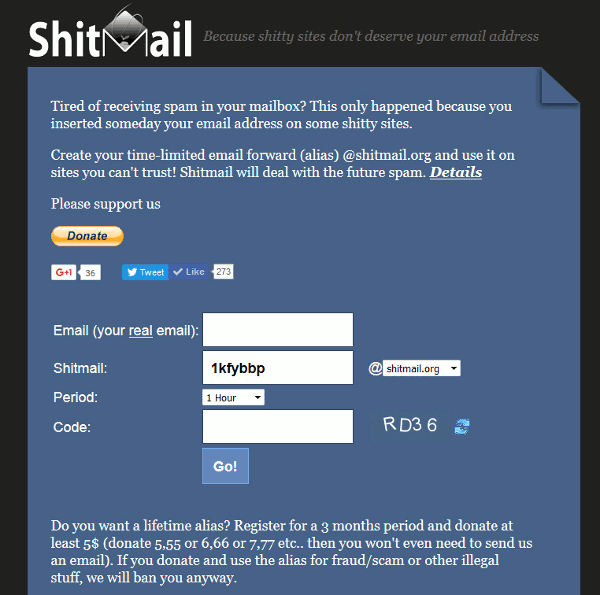
As any common web surfer, if you're like me, you enjoy the adventure as you traverse the vastness of the internet. With the almost seemingly infinite variety of forums, website, and services offering information, promotional trials, or even discounts in exchange for a simply email registration, it seems almost unimaginable to not type some random letters into the box for a chance to gain entry. Typically these attempts are met with verification messages that ask your to confirm the email address, convincing you to finally give in, and type in your real email. As you participate in these services and freely begin to hand out your email address, one will surely notice that the number of incoming spam messages can easily get out of control.
Well today I would like to bring to your attention a service named ShitMail. While the name is a rather comical, they are a serious email forwarding service that offers free email forwarding for a set time period, allowing you to create a custom email forwarding address with the length of one hour to three months. They will forward any messages received to your real email, providing you a safe way to join these communities without the worry of your email being sold to the highest of bidders.
What really amazed me is that the service is completely free, and when I tested it the messages didn't go to my SPAM folder, which is common with other forwarding providers. They don't require any registration information and encourage their visitors to donate. If you would like to have an email address registered for more than three months, simply make a donation over five dollars, and they will make the email address permanent for you.
Having a disposable email address that can forward emails to you is a really powerful tool to have in ones arsenal. I’s a tool that’s not very commonly found. And unlike a web-based mail client that requires you to log in from your browser, if you’re able to access your email at your fingertips, you will likely be more inclined to use your disposable address over your real address, keeping your real email safe, and your email provider happy, and hopefully, your spam and junk folders empty.
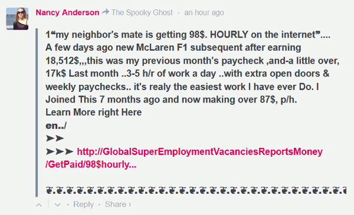I would like to believe that we would all enjoy a life of luxury with minimal effort. Career opportunities that allow one the freedom to work from home is by no means an opportunity that one would be willing to let pass. But when you see some strange person coming out of the blue, promising you easy financial gain by simply posting some link or website. Do you really ever wonder if the whole system works, or is the entire system some sort of Ponzi scheme, and are those even real people making those comments?
It's very understandable to be leery of such strange offers of opportunity, especially when they begin to ask for some sort of 'upfront payment' upon contacting them. The sad truth about these promises of fortune is that they are all fake.
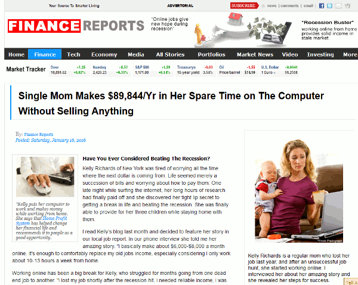
Armed with websites cleverly designed to look like an authentic news articles, the whole work was a creation of someone’s imagination placed together in a creative way, in the hopes of tricking their visitors. If one takes the time to investigate the supposed 'News' site, one will find that every link on the site takes them to the same sign-up page. Even the video with the lady speaking has been doctored and clipped together in such a way, that the lady appears to be endorsing the service.
So are these people even real, are there easy millions to be made? Sadly not, these supposed commenters are nothing more than computer scripts disguised to look like genuine people. Typically posted with common misspellings and the use of horrible grammar, they can become easy to spot, but these scam artists are working around the clock to make their scam ever so more believable.
So can you really make hundreds simply by posting a link? Maybe there are companies out there looking for working advertisers, but upon acquiring such an work from home opportunity, your employers will never ask you for any financial investments before you are able to begin your job. Safe Browsing!
Source: WorkAtHomeTruth.com
When it comes to torrent clients, there is an exceptionally large array to choose from. Ranging in complexity and functionality, there are enough flavors of these clients to suit almost anyone's needs. But what if you want something special, what if you want something that's designed to keep you safe while traversing the p2p network.
Today I would like to introduce a torrent client that has the ability to do just that. Designed with the advancements of TOR technology, Tribler is a free torrent client that is making strides to protect their users safety. While not perfect, the technology is designed to prevent anyone from scraping the swarm network, and catching your real IP.
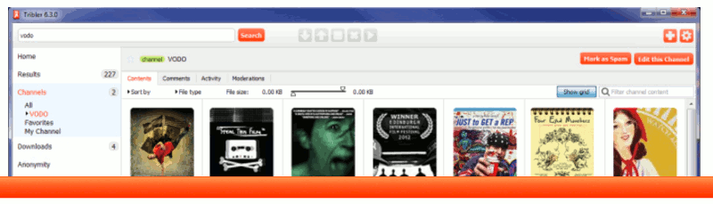
So while there will be a risk with any torrent client, Tribler is making a push to at least keep you safe while using one.
Source: www.tribler.org
The rise of streaming music is at an all-time high. Browsing Youtube, Soundcloud, or even Spotify, one is able to find nearly anything they could be looking for, typically at the price of free. But wouldn't it be nice to have this whole catalog of music in one virtual place?
Well, with a music streaming service called MusikWave, one is able to search from a variety of legal sources all put together in one place. Upon listening to a song, you will be greeted with Album Art, Artist Information, and even Track Lyrics!
The site really is an innovation beyond comparison that trumps the majority of paid services. With so many songs freely available online from different providers, it's only a wonder why this wasn't designed sooner.
Source: /www.musikwave.com
On my quest to find engaging upcoming services that would help protect your identity while online. I always seem to stumble on the most fascinating of wonders. Today I would like to share with you a site named zBigz
They offer both free & paid services for a fair starting price of $3.99 which is much cheaper than most VPN providers. zBigz also provides a free tool that allows your visitors to download things directly from your website, providing a direct download link with minimal advertisements.
I would give this provider a (5/5) rating due to their pricing and scalability options.
Source: zBigz.com
When I find a service that proves themselves multiple times over, I can't help but to fall in love with them and become a loyal patron. I have tried numerous different services over the years, and I've had my fair share of both good and bad experiences along the way. But there has been a service that has never placed me in any predicaments.
I would like to discuss the paid VPN service named Torguard. When online security first became an important topic to me in 2010, I began my search for a VPN provider that would take me seriously as a customer, instead of seeing me as another dollar sign.
After trying multiple service providers, and after a few dollars shorter due to not all of them providing trial periods, I finally stumbled upon Torguard.
At the time I was new to online security and had many questions. Their support was fast and friendly and always willing to do their best to solve any issues I had. They even helped me establish an SSTP connection to help me bypass my college restrictions that were preventing me from viewing my favorite News sites.
They have always been on top of the latest security threat or exploit and finding any bad dirt on them seems to be impossible (which is a good thing). They are offering a 14 day trial period, with fast speeds, multiple servers in many countries, a whole slew of different protocol to choose from. They also have a self-devoted attitude to keeping their customers privacy secure and safe. Not to mention accepting payment types of all kinds.
It's one of the few services I stand proudly by, and they have never let me down to this day.
And I could only hope that you will feel the same patronage in them that I do.